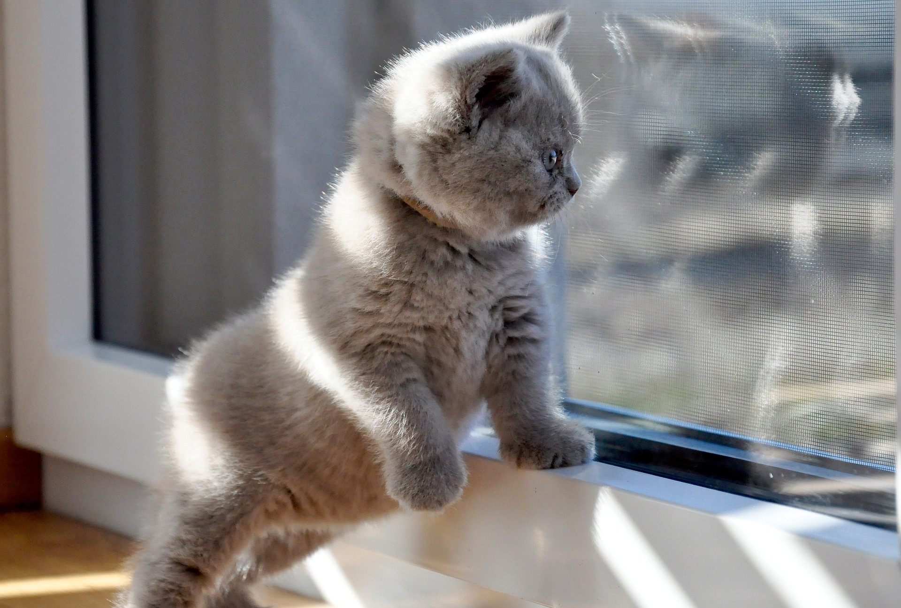

Czas na Kota*PL
Hodowla kotów brytyjskich

„Obcując z kotem, człowiek ryzykuje jedynie to, że stanie się wewnętrznie bogatszy“
Hodowla Czas na Kota*PL została zarejestrowana w styczniu 2019 roku w CCW - Stowarzyszenie Miłośników Kotów Cat Club Wrocław będącym członkiem federacji Felis Polonia, działającej pod patronatem Międzynarodowej Federacji Felinologicznej - Federation Internationale Feline (FIFE).W mojej hodowli mieszka kotka Brytyjska z renomowanych, światowych hodowli, niosące doskonałe europejskie linie hodowlane. Hodowlę prowadzimy z pasją oraz ogromnym zaangażowaniem. by koty były szczęśliwe oraz by dobrze się u nas czuły. Towarzyszą nam w obowiązkach dnia codziennego, nie ograniczamy im przestrzeni- mają do dyspozycji całe mieszkanie.
Jest to kot z charakterem, lecz bardzo często przychodzi na "mizianko". Kotka mieszka w naszej hodowli od 9 miesiąca życia. Jest bardzo towarzyska, gdy tylko przychodzę do domu od razu czeka na mnie pod drzwiami. Gęste, pluszowe kocie futerko zachęca, by je głaskać, zanurzyć w nim dłoń i cieszyć się tym momentem jak najdłużej.
 Telefon: +48 504 912 288
Telefon: +48 504 912 288 Miejsce hodowli- Wrocław
Miejsce hodowli- Wrocław E-mail - osowski.mateuszz@gmail.com
E-mail - osowski.mateuszz@gmail.com